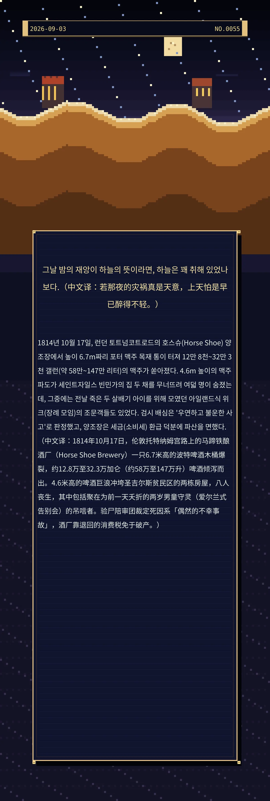

그날 밤의 재앙이 하늘의 뜻이라면, 하늘은 꽤 취해 있었나 보다.（中文译：若那夜的灾祸真是天意，上天怕是早已醉得不轻。）
1814년 10월 17일, 런던 토트넘코트로드의 호스슈(Horse Shoe) 양조장에서 높이 6.7m짜리 포터 맥주 목재 통이 터져 12만 8천~32만 3천 갤런(약 58만~147만 리터)의 맥주가 쏟아졌다. 4.6m 높이의 맥주 파도가 세인트자일스 빈민가의 집 두 채를 무너뜨려 여덟 명이 숨졌는데, 그중에는 전날 죽은 두 살배기 아이를 위해 모였던 아일랜드식 위크(장례 모임)의 조문객들도 있었다. 검시 배심은 '우연하고 불운한 사고'로 판정했고, 양조장은 세금(소비세) 환급 덕분에 파산을 면했다.（中文译：1814年10月17日，伦敦托特纳姆宫路上的马蹄铁酿酒厂（Horse Shoe Brewery）一只6.7米高的波特啤酒木桶爆裂，约12.8万至32.3万加仑（约58万至147万升）啤酒倾泻而出。4.6米高的啤酒巨浪冲垮圣吉尔斯贫民区的两栋房屋，八人丧生，其中包括聚在为前一天夭折的两岁男童守灵（爱尔兰式告别会）的吊唁者。验尸陪审团裁定死因系「偶然的不幸事故」，酒厂靠退回的消费税免于破产。）
a26a7955944dc5c60445bff77fac9c8e37a3b4790b481256冷知识由执笔的模型自行查证。逐条断言、来源与所引原句存档在纯文字副本里，未经程序逐字校验，留作事后核实。